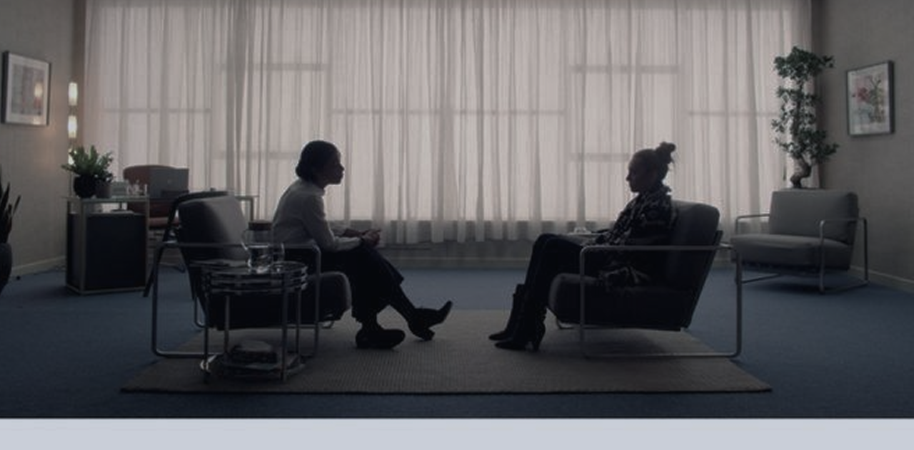

YOU ARE NOT ALONE
SUPPORT IS ALWAYS WITHIN REACH.
University life can be overwhelming, and it’s okay to feel stressed, anxious, or unsure sometimes. This platform is here to support you with confidential tools, compassionate guidance, and access to help whenever you need it.

Talk to an intelligent assistant anytime. It listens to your concerns, understands your emotions, and offers supportive responses and guidance.

Connect with other students, share experiences, and support each other in a safe and understanding community.

Request sessions with professional counsellors for confidential and personalized support when you need it most.
The Student Psychology and Social Support System is a digital platform designed to support the mental health, emotional well-being, and social connection of university students. This system was developed as part of an academic initiative to address the growing need for accessible and inclusive psychological support within higher education environments.
Student Psychology and Social Support System
+27 725579011